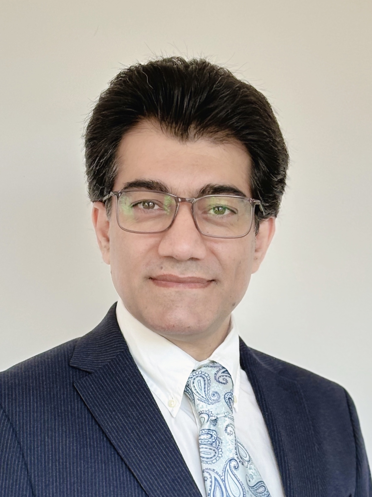

Geophysicist · Vienna, Austria
Scientific project coordination, research management and stakeholder reporting, with 20+ years across a UN organisation, academia and engineering.

I’m a geophysicist (PhD) with an engineering background and more than 20 years of experience across scientific research, data analysis and project management in international settings.
For nine years I worked at the Comprehensive Nuclear-Test-Ban Treaty Organization (CTBTO), a United Nations organisation in Vienna, as a data Lead Analyst specialising in seismic and infrasound data. I co-led a team of 21 analysts producing daily event bulletins for the CTBTO’s 24/7 global monitoring network, and wrote scientific and staffing reports for senior management and Member State audiences.
Before joining the CTBTO, I led research projects at the University of Vienna on ambient seismic noise interferometry and monitoring. Earlier, in the private sector, I managed construction projects for an engineering company, leading teams of up to 100 people and overseeing budgets, cost control and permits.
My main research interest today is environmental seismology: using continuous seismic recordings, and ambient noise in particular, to monitor changes in the natural environment. I am currently co-supervising a PhD student on a newly launched project that uses ambient seismic noise to track changes in hydrological parameters.
International Data Centre, CTBTO (United Nations) · Vienna
Department of Meteorology and Geophysics, University of Vienna
Kharadezh GmbH, engineering & construction · Iran
Proposed, organised and chaired sessions; reviewed and scheduled 167 abstracts; promoted sessions on LinkedIn and X.
Organiser, convener and rapporteur; reviewed 180 abstracts, coordinated speakers, wrote session scientific reports.
At international conferences and workshops, including a Best Poster Award at SnT 2017.
Co-supervised 2 doctoral researchers (1 completed) and mentored 1 master's student. Peer reviewer for 5 journals.
Awarded by the Science and Technology (SnT) Conference, Vienna, Austria.
Austrian Geophysical Society (AGS), for the best scientific work of 2015.
Awarded by the Centre of Doctoral Studies, University of Vienna. Proposal prepared and submitted by E. Qorbani.
Open to roles in scientific coordination, research management and international project delivery.